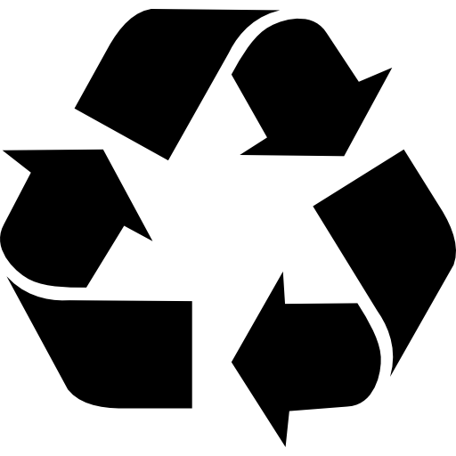

Goal 3: Reuse, Reduce, Recycle
The 3Rs, Reuse, Reduce and Recycle promote sustainable practices that reduces the environmental impact
in our daily lives.
Reduce refers to reducing the amount of waste that we create. We can do so by reducing the
amount of resources that we use by buying what we need and avoiding single-use items.
Reuse refers to using products or materials that have already been used and using them again instead of
disposing them away after single use. I'm already starting to do this but I will reuse plastic shopping bags
from NTUC instead of throwing them away and reuse them for other uses such as carrying spare clothing.
Recycle refers to converting old waste materials into new products, reducing the need to extract raw materials
to make new materials. Items like paper, and plastic can all be recycled to form new products.
Using the 3Rs, it will help to create a more sustainable earth to live in for all.